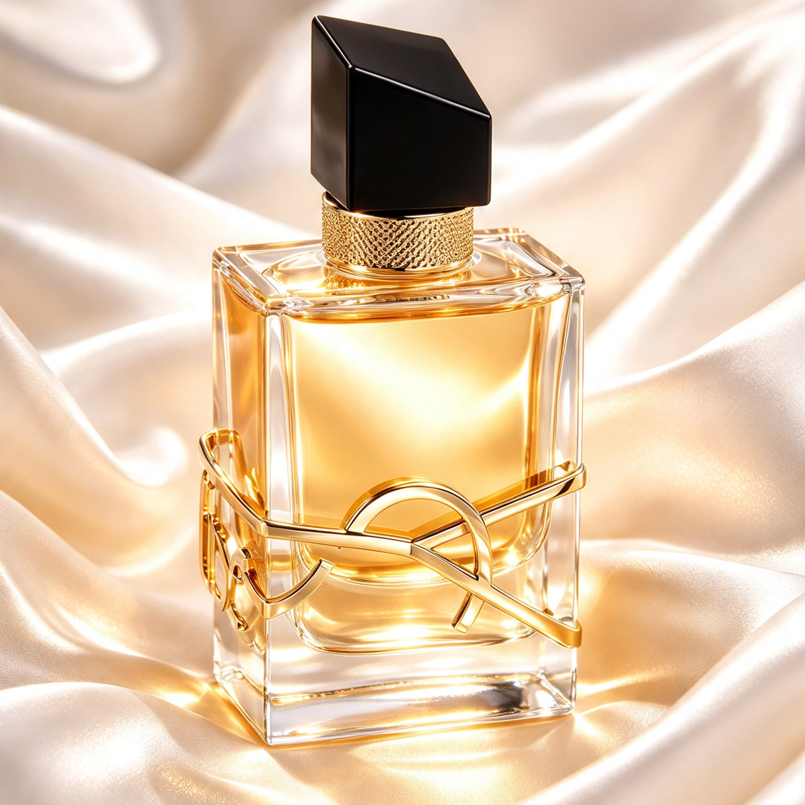
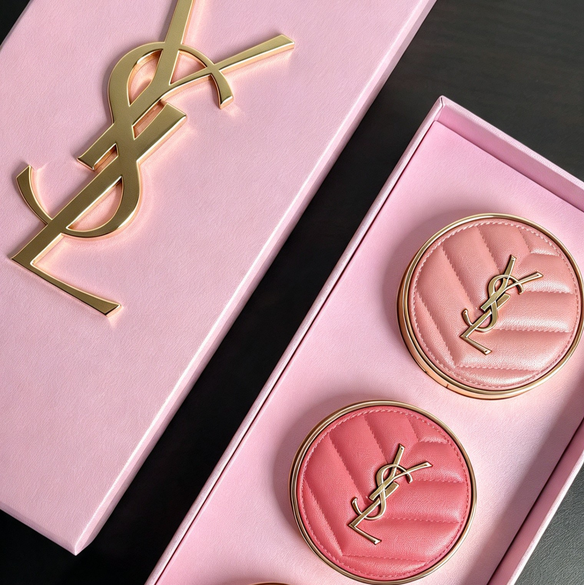

YSL Products offer a wide range of luxury beauty and fashion items, including perfumes, makeup, skincare, clothing, shoes and handbags. The products combine elegance, high quality and modern style, reflecting the brand’s luxurious identity.

YSL Libre is a popular women's perfume by Yves Saint Laurent. Its fragrance combines fresh lavender, orange blossom and warm vanilla. The scent is floral, sweet and slightly spicy.
YSL High Heels are luxurious and elegant shoes by Yves Saint Laurent. They combine stylish designs, high-quality materials and modern fashion. The heels are so beautiful and lux.

YSL Blush is a luxurious blush collection. The blushes add a natural, healthy glow and a beautiful touch of colour to the cheeks. They are known for their elegant packaging and smooth texture.